Interrogation of Inorganic Functional Nanomaterials through Experiments & Simulations
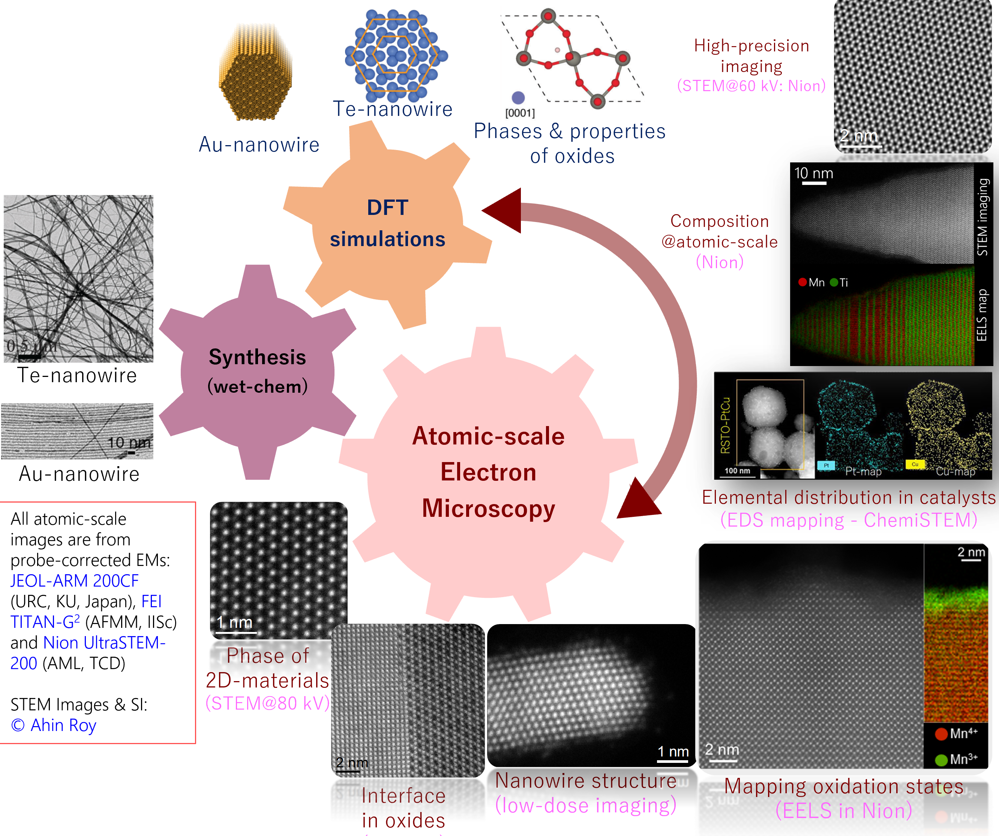
Our research is centered upon the broad theme of inorganic functional nanomaterials.
On an elaborate note, we ‘make’ the materials through wet-chemical synthesis, ‘see’ them through electron microscopy,
‘explore’ their structural and electronic properties through first principle simulations, and ‘apply’ them in suitable applications.
We believe that such combinatorial approach is quite powerful for solving materials problems.
The fun lies in the fact that sometimes computation leads to guided experiments, and sometimes it helps to understand experimental data.
The experimental approach involves interrogation of materials of interest at atomic-scale through aberration-corrected scanning transmission electron microscopy (AC-STEM).
And the computations involve atomic-scale simulations using density functional theory (DFT). Given a judicious choice of systems,
these two techniques are truly complementary and are quite useful to establish structure-property relationship in functional nanomaterials.
Doing this needs rigorous training in chemistry, aberration-corrected STEM and DFT simulations, along with access to wet-chemistry labs, and super-expensive
instruments such as AC-STEM and supercomputers.
In terms of materials, currently we are looking into functional oxides, chalcogen (Te & Se) and metal (Au and Pt) nanowires.
Application of such structure-property relationship in these functional nanomaterials ranges from nanoscale electronic devices to macroscale regular devices, catalysis, energy conversion and storage.
Please look into the recent research highlights below and Publications to know more.
Adsorbed O2 driven Baeyer Villiger oxidation on Cu-surface
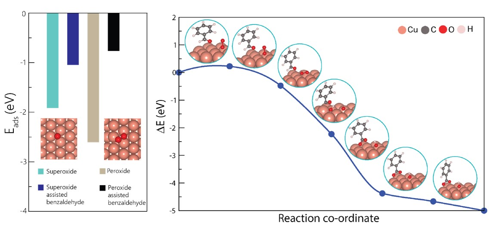
Copper oxide is a common catalyst for the industrially relevant Baeyer Villiger oxidation, and the common notion is supply of lattice oxygen followed by radical mediated mechanism drives the reaction. In contrast to this mechanism, we show that adsorbed oxygen on a free copper surface suffice to drive the reaction. To prove this, nanostructured copper was investigated for the reaction in the Mahanty group. We simulated the adsorbed O2-mediated mechanism in two forms on copper surface, viz. superoxide and peroxide. The calculations revealed that the barrier of the reaction to be minimal with the adsorbed oxygen! Moreover, the reaction intermediate predicted in our simulation tallied to the experiments, which was great fun! To know more, please read the 2025 paper in Journal of Physical Chemistry C.
Dielectric engineering of BaMnO3 rods by Ti-alloying for ORR active BTMO-Pt nanoheterostructure synthesis
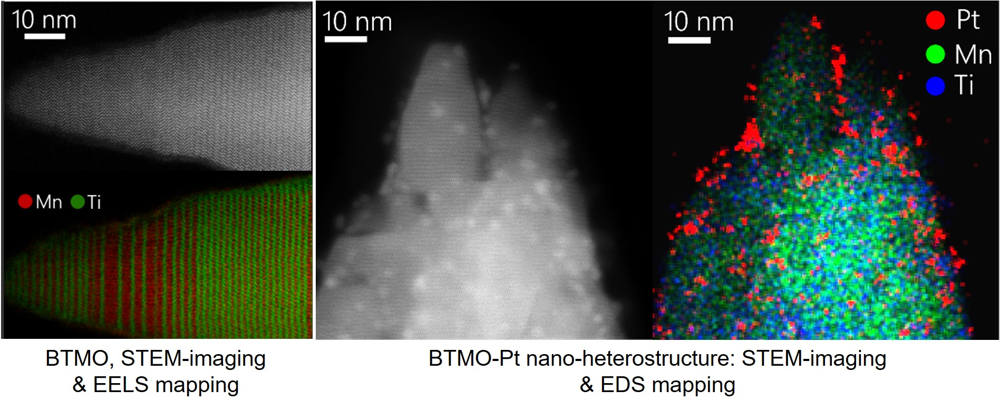
One of the common strategies to synthesize active ORR catalyst is to nucleate ultrafine Pt on the active oxide support through microwave synthesis. When subjected to microwave irradiation in presence of Pt salt solution, Pt fails to nucleate on hexagonal perovskite BaMnO3 (BMO). To circumvent this limitation, we alloyed Ti into the system. Using AC-STEM and EELS, we investigated the atomic and electronic structure of the alloyed system, showing structural transformation of BMO rods and systematic insertion of Ti into BMO lattice. This alloyed material, BaTi0.5Mn0.5O3 (BTMO) favours the nucleation of Pt. - driving the overpotential of the ORR towards a lower value. To know more, please read the 2024 paper in Advanced Functional Materials.
Reduced Mn-states in BaMnO3 for Oxygen Reduction Reaction
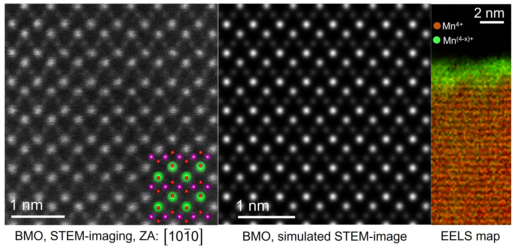
Hexagonal perovskite BaMnO3 (BMO) has got significant traction as cheaper alternative to Pt in fuel cells for oxygen reduction reaction (ORR). Using aberration-corrected STEM in conjunction with electron energy loss spectroscopy (EELS), we investigated the surface electronic structure of wet-chemically synthesized BMO nanorods. While the bulk in the middle of the nanorods show typical BMO crystal structure (see the HAADF-STEM images), the surface of the rod shows an amorphous layer. The EELS spectrum imaging showed that the Mn L2,3 peak shifted to the lower energy for the amorphous layer - indicating reduction of oxidation state. The material was systematically annealed in air and the ratio of the Mn3+/Mn4+ was found to go down along with its activity towards oxygen reduction reaction (ORR). Thus, the reduced Mn-states were found to drive the ORR for BMO. To know more, please read the 2023 paper in Advanced Functional Materials.
Atomic-scale Characterization of Exfoliated FeS2 for Energy Applications
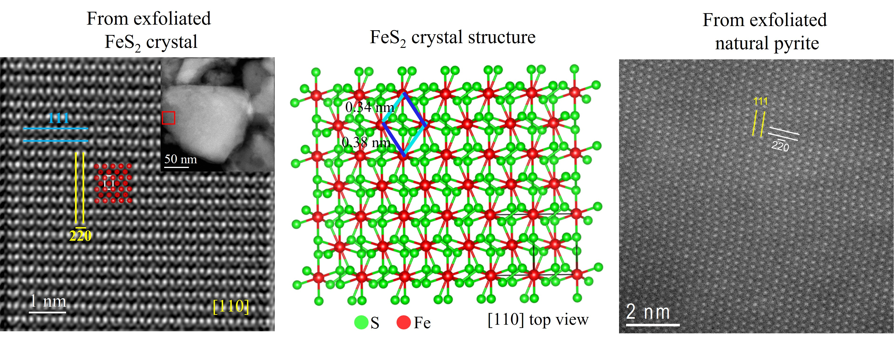
With suitable choice of solvent and exfoliation criteria, even non van der Waals solid can be exfoliated, and when done, should be characterized at atomic-scale to look at the resulting crystallography. In this work, using a scalable exfoliation technique, non van der Waals material FeS2 was exfoliated from single crystal by Coleman Group. With an unorrected FEI TITAN, the material was characterized at atomic resolution, indicating {110} as the cleavage plane. Furthermore, when FeS2 is exfoliated from its ore, the natural pyrite, the crystallography remains same. This exfoliated material was employed as anode materials in Li-ion batteries, basically coming from the stone named as Fool's Gold. To know more, please read the 2020 paper in ACS Nano and 2021 paper in FlatChem.
Low-kV AC-STEM of Liquid-phase Exfoliated MoS2
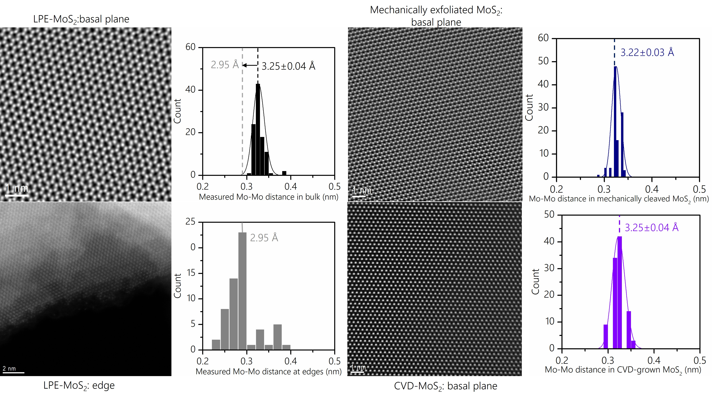
MoS2, a van der Waals solid can be exfoliated by liquid phase exfoliation (LPE), and can be functionalized by chemical means. To understand functionalization, it is important to look at the material at atomic-scale. With LPE-MoS2prepared by Coleman Group, low-kV (60 kV) atomic-scale STEM was carried out to look at basal plane and edges, wherein we found that the Mo-Mo distance in LPE-MoS2 is equivalent to that in mechanically cleaved and CVD-grown MoS2, ensuring the quality of the flakes for electronic applications. Also, the Mo-Mo distance at the edge shrinks, indicating the presence of S-vacancies. This study was done with Nion microscope at TCD, with a measurement precision of ~5 pm. Such low-kV high-precision characterization of LPE-based 2D materials is very challenging, and was possible because of the ultra-clean sample quality and outstanding stability of the microscope. To know more, please read the 2021 paper in Nature Nanotechnology.
PtCu Alloy Nanoparticles on reduced SrTiO3 for Preferential CO Oxidation (PrOx)
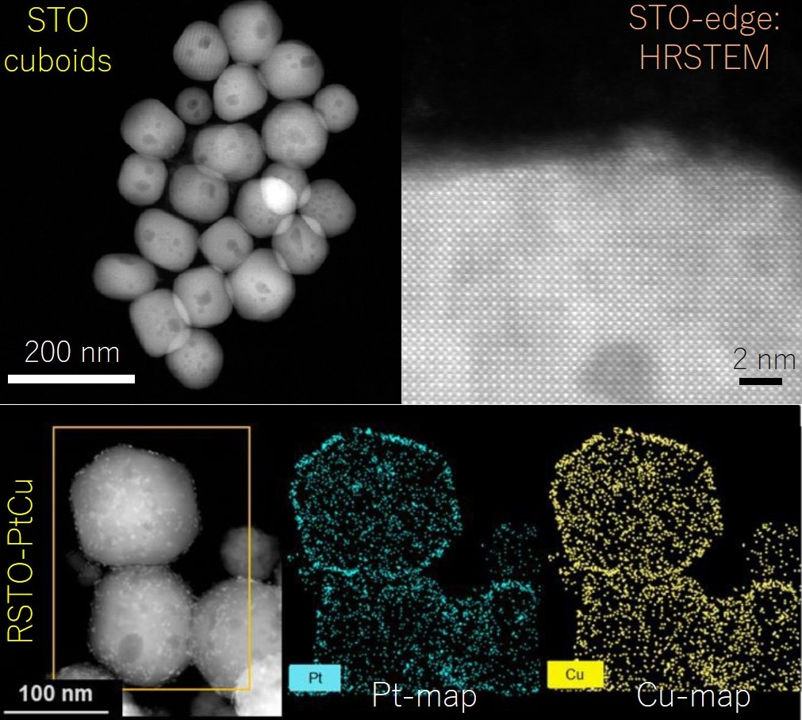
Preferential Oxidation of CO in excess H2 is an industrially important reaction for Polymer Exchange Membrane Fuel Cells (PEMFCs).
Usually, commonly employed pure Pt nanoparticles are costly and they undergo severe poisoning by CO and has a high affinity to adsorb H2 which is the fuel in the cell.
To avoid this, alloying Pt with a base-metal is a commonly adopted strategy, but achieving and characterizing such alloying at the nanoscale is extremely challenging.
In this paper, using a facile microwave based technique, PtCu alloy nanoparticles were nucleated on reduced-SrTiO3 support for the PrOx reaction.
Using SuperX EDS detector based on ChemiSTEM technology in a probe-corrected FEI TITAN G2, the alloying was characterized , and the hybrid catalyst was employed for the PrOx reaction at typical operating temperatures of PEMFcs.
Adsorption–desorption experiments established the strikingly different CO adsorption behavior of bimetallic PtCu compared to monometallic Pt nanoparticles on support.
Through thorough characterization and catalytic studies, a trend in the selectivity and stability of CO conversions over the SrTiO3-supported PtCu alloy catalyst was established. To know more, please read the 2019 paper in Nanoscale.
Two-Dimensional SnSe2-graphene Hybrid for Photodetection
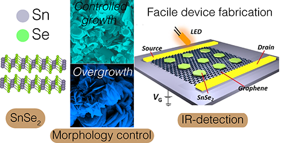
Photodetection with low band-gap semiconductor SnSe2 suffers from low carrier mobility. This can be circumvented using graphene based hybrid device structure, which demands a flat 2D interface. Using solution chemistry, we have devised a way to control the growth of SnSe2 with a flat 2D morphology. DFT simulations rationalize our synthesis strategy showing very different adsorption behaviour of capping agents in the SnSe2 growth medium. Graphene-SnSe2 hybrid device (with Quantum Materials & Devices Group, Physics, IISc) shows a photoresponse of ~1010 Jones, at par with state-of-the-art photodetectors. Thus, with engineered chemistry, it was possible to devise a dropcast-based state-of-the-art 2D-heterostructure fabrication for photodetection. To know more, please read the 2019 paper in Nanoscale.
Phase and Morphology Tailored Electrochromicity in Nanoscale WO3
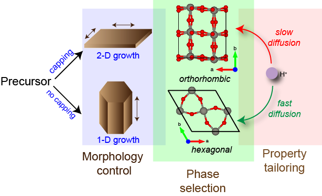
Tailoring the electrochromic property of WO3 demands a stringent control of phase and morphology. WO3 exists in a myriad of crystallographic phases, and synthesizing it as a phase-pure material is a daunting task. We have been able to synthesize phase-pure hexagonal and orthorhombic WO3 by a simple hydrothermal process, through variation of capping agent. The hexagonal phase shows a nanorod morphology, and the orthorhombic phase shows a plate morphology. Energetics of capping calculated by DFT simulations complement the results as well. In terms of properties, the two phases show very different coloration kinetics, which can be rationalized by simulations as well. Thus, with tailored chemistry rationalized by DFT simulations, a relationship between crystallographic structure and electrochromic property of nanoscale WO3 can be established. To know more, please read the 2017 paper in J. Mater. Chem. C.
Adsorption Induced Semiconductor to Metal Transition in Tellurium Nanowires
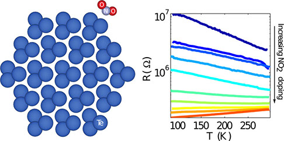
Semiconductor to metal (S-M) transition usually requires application of high pressure, or chemical/compositional transformation of materials. In this paper, in contrast to the usual severe conditions, we show that ultrathin trigonal Te nanowires undergo S-M transition upon simple adsorption of NO2. This phenomenon was predicted by DFT calculations, as modeling of the adsorption process showed a band crossing across the Fermi-level upon NO2 adsorption onto semiconducting Te nanowire. Such striking prediction was verified by R-T measurements on the wet-chemically synthesized Te nanowires, wherein gradually increasing concentration of NO2 on Te wires showed a slow change of the slope of R-T curve from negative to positive value. This has an implication on the gas sensing properties of Te nanowires, as our combined experiments and calculations clearly show that electronic band structure can be modulated by adsorption. To know more, please read the 2017 paper in ACS Appl. Mater. Interfaces.
Negative Differential Resistance in Armchair Silicene Nanoribbons
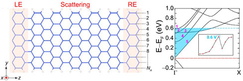
Negative Differential Resistance (NDR) is a rare phenomenon in electronic devices. Using DFT simulations coupled with non-equilibrium Green's Function (NEGF)- based electron transport, we show that 3n+2 armchair silicene nanoribbons is a potential candidate to show NDR. The NDR can be explained from the basic electronic structure as-well. Thus, electronic transport calculation opens a possibility of novel electronic phenomena in 1D nanoribbons of silicene. To know more, please read the 2017 paper in IOP Nanotechnology.
Wrinkling of Atomic Planes in Ultrathin Au nanowires
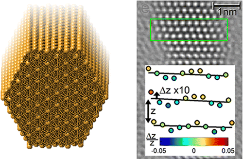
A detailed understanding of structure and stability of nanowires is critical for applications. First-principles calculations of the [111]-oriented single-crystalline Au nanowires predicts that the atoms in the close-packed atomic planes are displaced in the axial direction leading to wrinkling of the (111) planes. Atomic-resolution imaging of wet-chemically synthesized ultrathin single crystalline Au nanowires using aberration-corrected transmission electron microscopy confirms the prediction. Using molecular dynamics simulations, we confirm that this is a size effect in nanoscale Au. With finite element modeling and solid mechanics arguments, we confirm that such wrinkling originates because of the dominating anisotropic surface stress of the bounding facets of the nanowire. This observation provides new understanding on the equilibrium structure of nanoscale systems and could have important implications for applications in sensing and actuation. To know more, please read the 2014 paper in Nano Letters.
Semiconductor-like Sensitivity in Metallic Ultrathin Au Nanowire Sensors
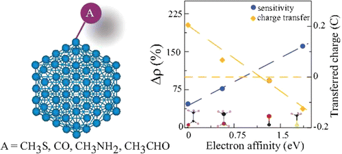
Owing to surface passivation, the sensitivity of semiconductor-based sensors deteriorates significantly at nanoscale. Using simulations, we demonstrate semiconductor-like sensitivity toward chemical species in ultrathin single-crystalline gold nanowires. Detailed electronic structure calculations reveal that the sensing mechanism is governed by the modification of the electronic density of states in the Au nanowires. Interestingly, the sensitivity exhibits a linear relationship with the electron affinities of the respective analytes, rendering a possibility of analyte-specific sensitivity. To know more, please read the 2014 paper in J. Phys. Chem. C.